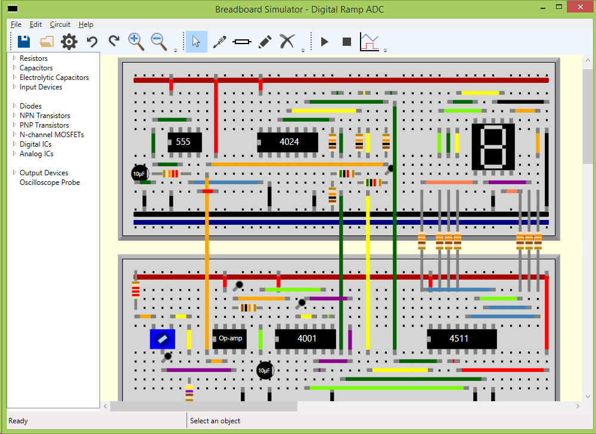

Introduction
Breadboard Simulator is an easy-to-use circuit simulator with a 'Virtual Breadboard' style user interface. It is ideal for educational use, as it allows students to simulate circuits before building them. It also allows voltages and currents to be measured at any pin in the circuit, and includes an oscilloscope type graph view.
The following components are included by default:
- Resistors
- Capacitors
- SPDT and Push switches
- Potentiometers
- LDRs
- Many 4000 series logic gates (details)
- Op-amps
- 555 Timers
- LEDs
- 7-segment displays
The simulator is interactive, meaning that you can change switches and potentiometers while the simulation is running and the simulation will reflect these changes in realtime. LEDs and 7-segment displays will also light up during the simulation if there is current flowing through them.
An example of an advanced circuit that can be simulated is shown below:
